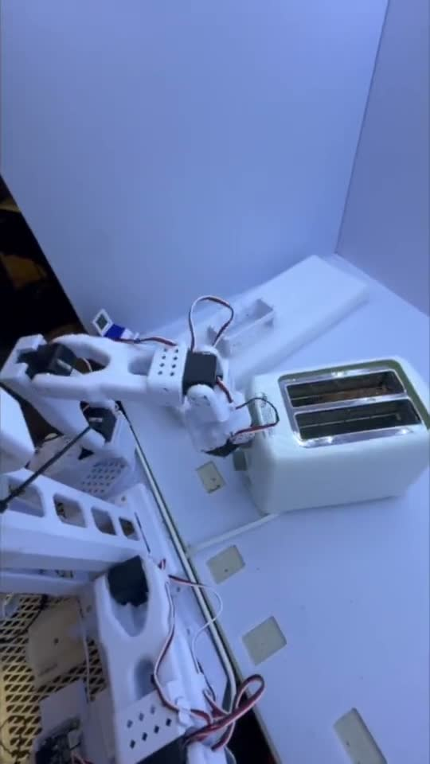
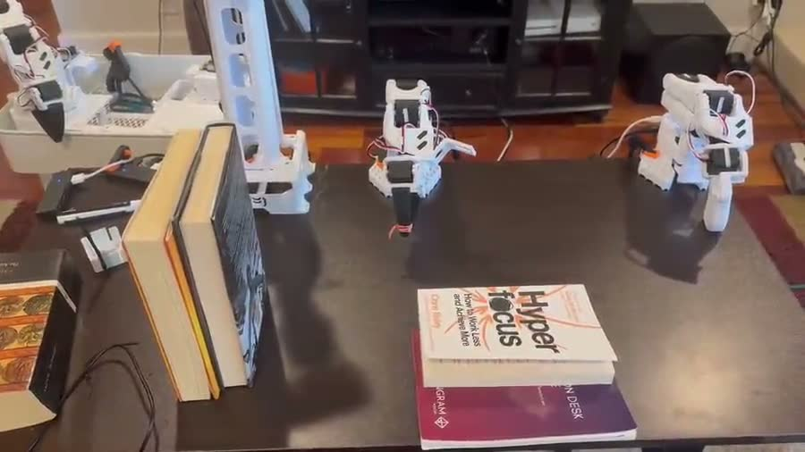
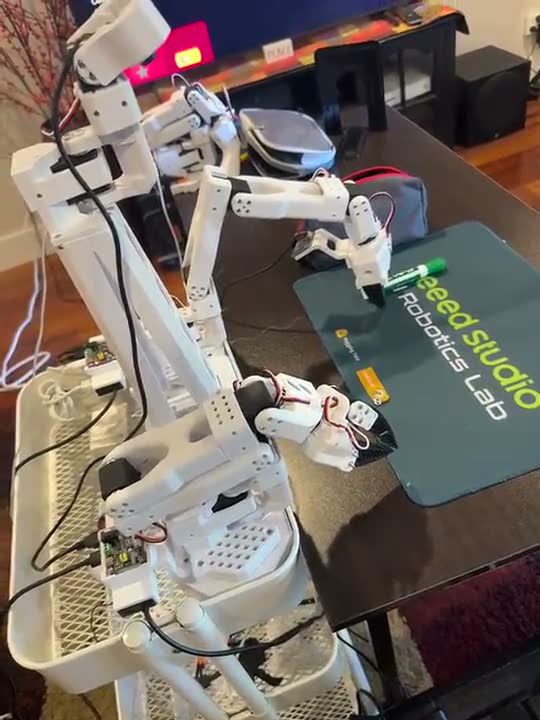

Home lab.
A running set of experiments with cheap arms on my living-room table, pointed at ordinary household jobs. The interesting part is not that the policies work, it is finding out exactly what they have and have not learned when they do.



Why I'm doing this
I spent two years on a real cleaning manipulator at Peanut Robotics using almost entirely classical methods: trajectory generation, ICP, state machines. This is the inverse experiment. Start from learned policies, fall back to classical control only where it earns its place, and find the principled boundary between the two by running into it.
Contact-rich manipulation is the interesting arena for that question, because it is exactly where pure learned policies struggle and pure classical control is too brittle. The useful question is not which one is better, it is what the right architecture for combining them looks like.
The setup
Everything here runs on SO-101 arms from my XLeRobot setup, driven by the LeRobot stack: teleoperate the arm to record demonstrations, push the dataset to Hugging Face, train a policy on it, then run that policy back on the same hardware. No motion planner, no hand-written controller. The robot learns the task from the demonstrations or it does not do the task.
That makes the failure modes unusually informative, which is really why these pages exist. When a classical pipeline fails you can trace it to a line of code. When a learned policy fails, you have to design an experiment to find out what it actually learned.
What I take from it so far
- A working demo tells you very little. ACT picking up the orange pen looks identical to ACT understanding the task. The difference only shows up when you deliberately break an assumption, which is why removing the pouch was the most useful five minutes of the whole project.
- More data was the wrong instinct. My first move on poor results was to merge datasets and train bigger models. Cutting the task down to one pen taught me considerably more than the merged set did.
- Backbone priors buy generalization that data collection would have to pay for. Same 40 episodes, same task; the VLM-backed policy generalized across colors where ACT could not. Collecting demonstrations in every pen color would have worked too, and would have cost far more.
- Generalization is task-dependent, not architecture-dependent. The same ACT that shrugged off an unseen book and partial occlusion could not handle a pen in a different color. What a policy latches onto depends on the task and the data, which is the argument for probing every one of them.
- Hardware sets the ceiling. 8 GB of VRAM quietly rules out an entire class of model, which is a real constraint on what a home lab can evaluate rather than a footnote.
The open questions
Longer term, what I actually want out of this is a framework that wraps a learned policy in the classical layers it needs to be trusted: a state machine for task orchestration (approach, engage, clean, retract, recover), force feedback in the inner loop to bound contact forces regardless of what the policy outputs, and recovery behaviors for when the policy goes outside its envelope. The questions these experiments are meant to answer:
- How small a demonstration dataset can produce a genuinely useful contact-rich policy?
- Where does the principled boundary between learned and classical actually sit?
- What does recovery look like for a learned policy that has no built-in concept of "I don't know"? The pouch experiment is a small version of this: the policy was confidently wrong, and nothing in it could detect that.
- How do you expose enough hooks that someone else can plug in their own policy and fallback behaviors?